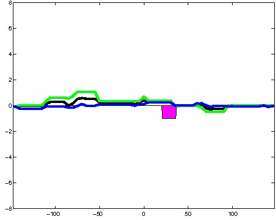
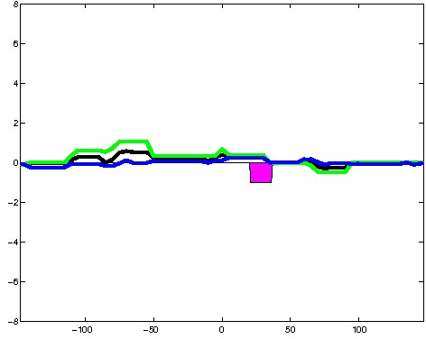
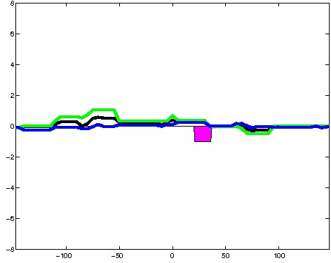

K562 Neither DNase matched - State 16:ElonW (n=17)
K562 Neither DNase matched - State 16:ElonW (n=17)
[
See group descriptions
]

; picked in K562 (state 16:ElonW, DNase); matched; chr12:122,833,049-122,833,343 (295bp)")
; picked in K562 (state 16:ElonW, DNase); matched; chr1:66,081,629-66,081,923 (295bp)")
; picked in K562 (state 16:ElonW, DNase); matched; chr15:91,109,709-91,110,003 (295bp)") 

; picked in K562 (state 16:ElonW, DNase); matched; chr3:150,278,209-150,278,503 (295bp)")
; picked in K562 (state 16:ElonW, DNase); matched; chr6:82,937,509-82,937,803 (295bp)")
; picked in K562 (state 16:ElonW, DNase); matched; chr2:152,677,789-152,678,083 (295bp)")
; picked in K562 (state 16:ElonW, DNase); matched; chr11:31,392,809-31,393,103 (295bp)")